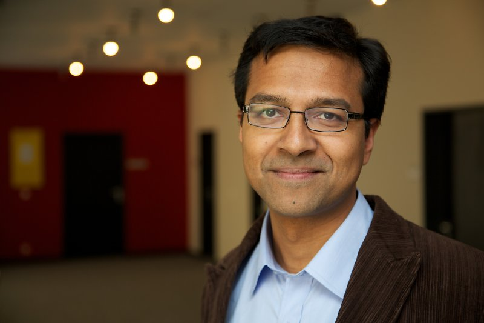

Richard D'Souza
Staff Astronomer
Vatican Observatory
Specola Vaticana
V-00120, Citta del Vaticano
rdsouza_at_specola_dot_va
Education:
- BSc Physics, St. Xavier's College, University of Mumbai, India, 2002
- MSc Physics, University of Heidelberg, Germany, 2005
- Bachelors in Philosophy, Jnana Deepa Vidyapeth, Pune, India, 2007
- Bachelors in Theology, Jnana Deepa Vidyapeth, Pune, India, 2011
- Phd in Astronomy, Ludwig Maximilian University, Munich, 2016
Research Interests:
- Galaxy formation and Evolution
- Stellar halos of galaxies
- Galxaxy Mergers
- What mergers do to galaxyies?
Publications on ADS